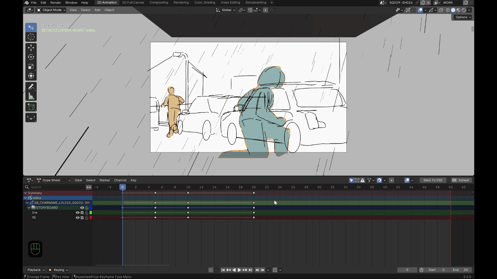
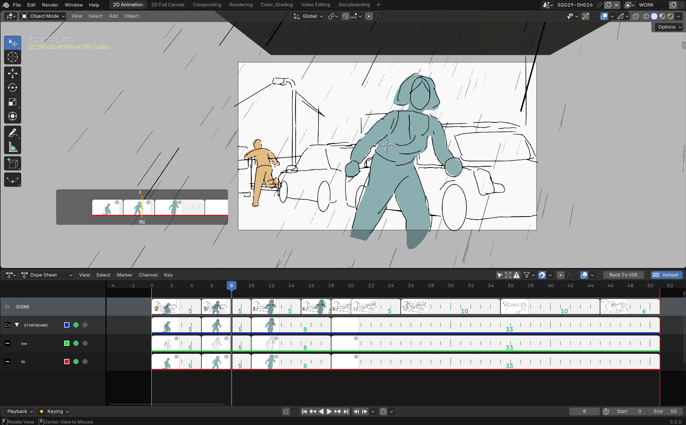
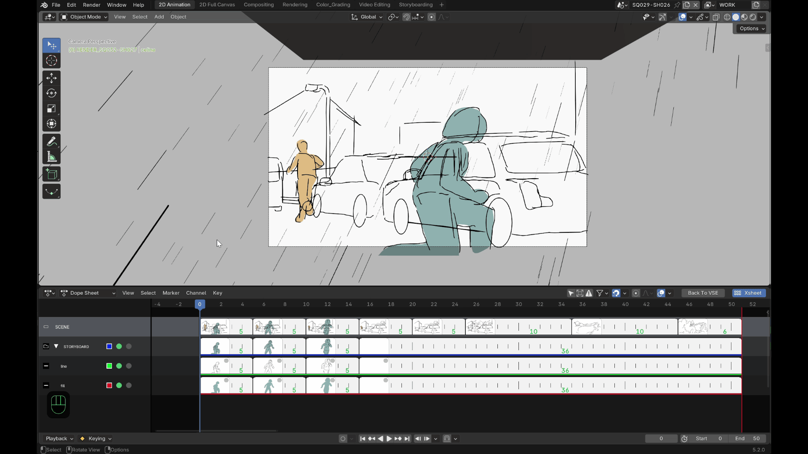
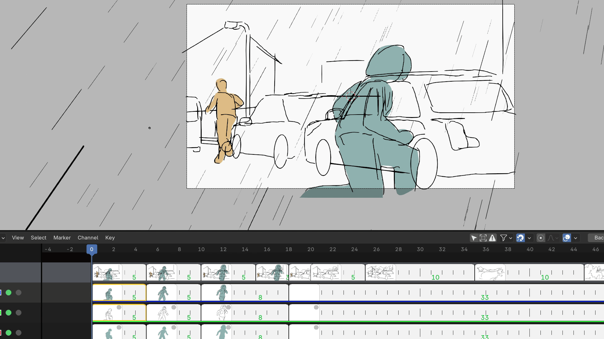

Fonctionnalités¶

(aperçu général — voir le détail de chaque fonctionnalité ci-dessous)
Vignettes réelles¶
Chaque clé est affichée comme une vraie miniature du dessin, générée par rasterisation GPU directe des traits Grease Pencil — pas un rendu complet de la scène. Les couleurs de matériau, de vertex paint et de fill sont prises en compte, avec le même rendu que dans le viewport.
Les vignettes sont mises en cache : une clé n'est régénérée que si son contenu a réellement changé. Sur un dessin très dense, la génération se fait par petits lots en arrière-plan pour ne jamais bloquer l'interface — vous verrez brièvement un placeholder avant que la vignette définitive apparaisse.
Hiérarchie Scene / Summary / Groupes / Layers¶

Quatre niveaux de rangées, chacun avec sa propre vignette composite :
- Scene : composite de tous les objets Grease Pencil visibles de la scène.
- Summary : composite de tous les layers visibles d'un objet.
- Groupe : composite des layers visibles de ce groupe.
- Layer : le dessin réel, clé par clé.
Chaque niveau peut être affiché ou masqué indépendamment depuis le N-panel (voir Préférences).
Déplacer une clé (trim / ripple)¶

Cliquez-glissez une vignette pour déplacer sa clé dans le temps :
- Sans modificateur → mode Trim : seules les clés sélectionnées se déplacent (ensemble, espacement relatif conservé), avec une butée qui empêche de dépasser la clé non sélectionnée la plus proche, avant ou après le groupe déplacé.
- Ctrl maintenu → mode Ripple : les clés sélectionnées et toutes celles qui suivent se décalent ensemble du même delta ; seule la clé précédente (qui ne bouge jamais) borne le mouvement.
Le mode est décidé au moment où vous cliquez (presser Ctrl en cours de glissement ne change pas le mode déjà choisi).
Multi-sélection et groupes¶
- Shift+clic sur une vignette ajoute ou retire une clé de la sélection, y compris à travers plusieurs layers ou plusieurs groupes.
- Déplacer la vignette d'un groupe déplace réellement la clé correspondante sur chacun de ses layers enfants — le groupe se comporte comme un parent.
Aperçu flottant (Alt + survol)¶
Maintenez Alt en survolant n'importe quelle vignette pour afficher un aperçu flottant agrandi près du curseur — pratique pour juger un dessin sans quitter la vue d'ensemble de l'xsheet.
Isoler une rangée¶
Un bouton Isolate sur chaque rangée masque toutes les autres (un vrai hide Blender, pas un simple filtre d'affichage). Shift+clic cumule l'isolation sur plusieurs rangées à la fois. Isoler un layer enfant rend automatiquement visible la chaîne de ses groupes parents.
Couleur de canal et type de clé¶
- Un swatch de couleur dans la colonne de channels permet de changer la couleur du layer ou du groupe directement depuis l'overlay (même color wheel natif que Blender).
- Une pastille de type de clé, dans le coin de chaque vignette, permet
un clic droit pour choisir le type de keyframe (mêmes types et icônes
que le
keyframe_typenatif de Blender).
Renommer un layer ou un groupe¶
Double-cliquez sur le nom d'un layer ou d'un groupe (en dehors des icônes) pour ouvrir une popup de renommage. Les collisions de nom sont gérées automatiquement par Blender, comme pour n'importe quel layer natif.
Scrubbing dans la vue 3D¶

Dans la vue 3D, maintenez Alt+M (raccourci personnalisable, voir Préférences) pour afficher un défileur de vignettes près du curseur, sans jamais quitter la vue 3D :
- Glissez horizontalement pour parcourir les clés du layer actif dans le temps.
- Déplacez la souris verticalement pour changer de layer scrubbé — un changement réel et persistant une fois la touche relâchée, pas un simple aperçu temporaire. Les layers cachés (ou dont un groupe parent est caché) ne sont jamais atteignables de cette façon.
- Le curseur boucle sur les bords de l'écran pendant le scrub, comme dans les outils natifs de Blender — vous pouvez continuer à scruber sans jamais être bloqué par le bord de la fenêtre.
Pas de onion skin dans les vignettes
Afficher les dessins voisins (avant/après) en fondu dans la vignette elle-même a été testé puis abandonné : l'encre rasterisée étant noire, un simple réglage d'opacité rend le fantôme illisible plutôt qu'utile. Une vraie recoloration demanderait un shader dédié, non disponible aujourd'hui.